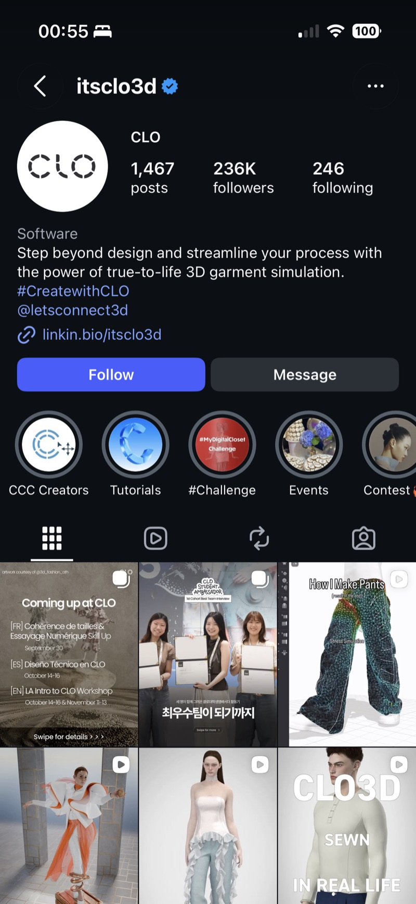
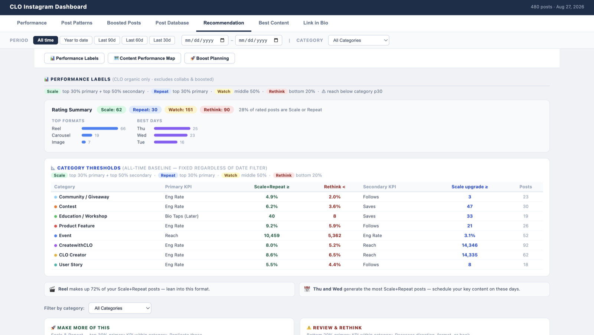
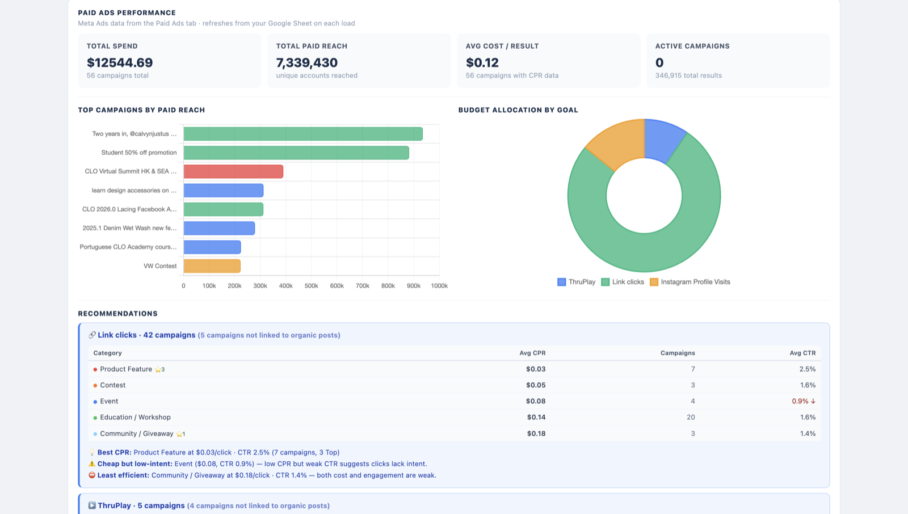
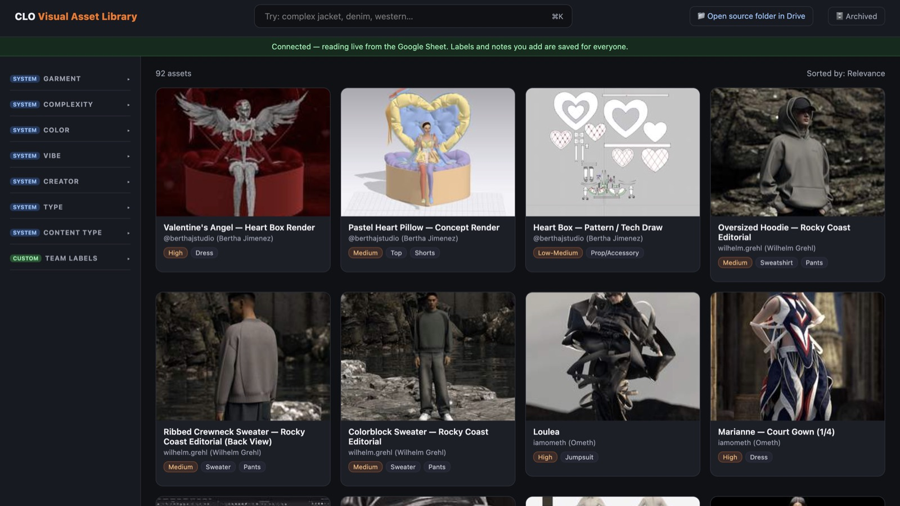
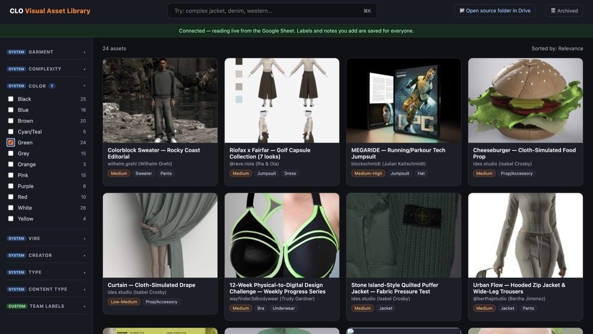
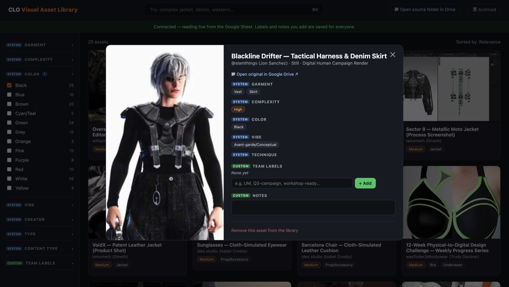

一
GTM & Creator Strategy — 2026.0 新版本发布
2026.0一次上了十多项新工具。全平台官宣和in-house设计师的in-depth功能视频是团队统一在做的，我负责的是面向创作者的内容落地这一层。
版本正式公开之前，enterprise client和ambassador program里的创作者已经拿到了early access。我的工作是在新版本上线前后，跟产品团队对齐每轮主推功能，确认核心卖点和适用场景，然后画故事板、联系对应垂类的创作者产出feature highlight视频。
其中2026.0 Lacing这条内容是我全程负责的。从跟产品对齐技术细节、画故事板、到匹配创作者拍摄制作，全部由我推进。一支束腰系带工具的演示视频，最终拿了4,073个赞、447次转发，是整轮推广中自然流量表现最好的内容之一。
投放上先跑自然流验证方向，再推paid media。整个2026.0周期内，项目视频累计触达25万以上账号，总互动5万以上。
展开看细节
早期访问机制：enterprise client与ambassador创作者在公开发布前即获得功能预览权限。制作流程：技术对齐 → 故事板 → 创作者匹配拍摄，2026.0 Lacing一条内容由我全程独立推进。投放节奏：自然流验证在前，付费媒体放大在后。

二
Marketing Analytics — 内容数据看板与诊断系统
我独立搭了一个跟Google Sheet实时联动的Instagram数据看板。之前团队想知道内容表现怎么样，方式是手动翻Insights然后凭经验判断。我的看板把480多条历史帖子按内容类别分了8类，每类单独设KPI阈值，自动归入四个层级：重点扩量、复用、观察、需优化。直接输出动作建议，不只是一个数据面板。
跑出来的结论很具体。Reels占高表现层级的72%，周三周四发布效果最好，用户故事类内容的主页访问转粉率达到38.4%。这些结论后来直接进了团队的周排期和长期内容策略。
同时搭了一个付费媒体追踪视图，通过UTM和pixel把12,500多美元投放支出和730万以上付费触达回溯到具体内容和campaign，平均单次转化成本0.12美元。
展开看细节
分类体系：8个内容类别独立设置KPI阈值（Scale/Repeat/Watch/Rethink四级）。关键发现：Reels占比72%、周三周四为最佳发布窗口、User Story类内容转粉率38.4%为全类别最高。付费媒体归因精确到单个campaign与content级别。



三
AI Automation & Asset Ops — 视觉素材库
CLO的创作者渲染素材累计2,000多个，之前全扔在Google Drive里，找东西基本靠问人。
我设计了一条自动化标签流水线，ffmpeg处理图片和视频，视觉大模型按服装类型、复杂度、颜色、美学风格做分类。pilot验证准确率达标后推到全库，现在支撑着一个实时可搜索的素材库。营销团队策划campaign时能直接按调性筛素材，从创意构思到素材落地的时间明显缩短了。
展开看细节
技术栈：ffmpeg预处理 + 视觉大模型多维度分类（服装类型、复杂度、颜色、美学风格）。Pilot验证通过后推广至全部2,000+素材。交付为可搜索前端界面，支持多维度筛选调用。


